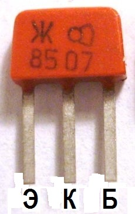
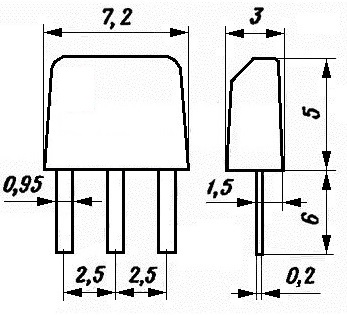

Транзистор КТ315
(КТ315А, КТ315Б, КТ315В, КТ315Г, КТ315Д, КТ315Е, КТ315Ж, КТ315И, КТ315Р)
Транзистор КТ315 - кремниевый, эпитаксиально-планарный, обратный (структуры n-p-n), усилительный. Предназначен для генерирования и усиления ВЧ колебаний. Может также работать в различных импульсных схемах. Часто применяется в паре с транзисторами КТ361.
Имеет герметичный пластмассовый корпус. Буква соответствующего типономинала указывается на корпусе прибора, а также на этикетке. Выводы - гибкие, плоские. Масса не более 0,18 г.
Цоколевка КТ315 показана на рисунке 1.
 Рис. 1 - Внешний вид и цоколевка транзистора КТ315 |
 Рис. 2 - Габаритные размеры транзистора КТ315 |
Электрические параметры КТ315
| Коэффициент передачи тока (статический) h21э ( Uкэ = 10В, Iк = 1 мА) | |
| КТ315А, КТ315В | 30 ... 120 |
| КТ315Б, КТ315Г, КТ315Е | 50 ... 350 |
| КТ315Д | 20 ... 90 |
| КТ315Ж | 30 ... 250 |
| КТ315И | не менее 30 |
| КТ315Р | 150 ... 350 |
| Граничная частота коэффициента передачи тока (при Uкэ = 10В, Iк = 1 мА) |
не менее 250 МГц |
| Постоянная времени цепи обратной связи. Iэ = 5 мА, Uкб = 10В, не более: |
|
| КТ315А | 300 пс |
| КТ315Б, КТ315В, КТ315Г, КТ315Р | 500 пс |
| КТ315Д, КТ315Е, КТ315Ж | 1000 пс |
| КТ315И | 950 пс |
| Граничное напряжение (при Iэ = 5 мА), не менее: | |
| КТ315А, КТ315Б, КТ315Ж | 15 В |
| КТ315В, КТ315Д, КТ315И | 30 В |
| КТ315Г, КТ315Е, КТ315Р | 25 В |
| Напряжение насыщения К-Э. Iб = 2 мА, Iк = 20 мА, не более: |
|
| КТ315А, КТ315Б, КТ315В, КТ315Г, КТ315Р | 0,4 В |
| КТ315Д, КТ315Е | 0,6 В |
| КТ315Ж | 0,5 В |
| КТ315И | 0,9 В |
| Напряжение насыщения база-эмиттер (при Iб = 2 мА, Iк = 20 мА), не более: | |
| КТ315А, КТ315Б, КТ315В, КТ315Г, КТ315Р | 1 В |
| КТ315Д, КТ315Е | 1,1 В |
| КТ315Ж | 0,9 В |
| КТ315И | 1,3 В |
| Ток коллектора (обратный) при Uкб = 10 В | не более 1 мкА |
| Ток К-Э (обратный). Rбэ = 10 кОм, Uкэ = Uкэ max, не более: | |
| КТ315А, КТ315Б, КТ315В, КТ315Г, КТ315Д, КТ315Е, КТ315Р | 1 мкА |
| КТ315Ж | 10 мкА |
| КТ315И | 100 мкА |
| Обратный ток эмиттера (при Uэб = 5 В), не более: | 50 мкА |
| Ёмкость коллекторного перехода. Uкб = 10 В, не более: | |
| КТ315А, КТ315Б, КТ315В, КТ315Г, КТ315Д, КТ315Е, КТ315Р | 7 пФ |
| КТ315Ж, КТ315И | 10 пФ |
| Постоянное напряжение коллектор-эмиттер (при Rбэ = 10 кОм) : | |
| КТ315А | 25 В |
| КТ315Б, КТ315Ж | 20 В |
| КТ315В, КТ315Д | 40 В |
| КТ315Г, КТ315Е, КТ315Р | 35 В |
| КТ315И | 60 В |
| Постоянное напряжение база-эмиттер | 6 В |
| Ток коллектора (постоянный): | |
| КТ315А, КТ315Б, КТ315В, КТ315Г, КТ315Д, КТ315Е, КТ315Р | 100 мА |
| КТ315Ж, КТ315И | 50 мА |
| Рассеиваемая мощность коллектора (постоянная) при Т ≤ +25°C: | |
| КТ315А, КТ315Б, КТ315В, КТ315Г, КТ315Д, КТ315Е, КТ315Р | 150 мВт |
| КТ315Ж, КТ315И | 100 мВт |
| Температура перехода (p-n) | +120°C |
| Рабочая температура (окружающей среды) | -60... +100°C |
В особых случаях возможна эксплуатация транзисторов КТ315 при Iк = 20 мА и Uкб = 12,5 В в режиме Pк = 250 мВт.